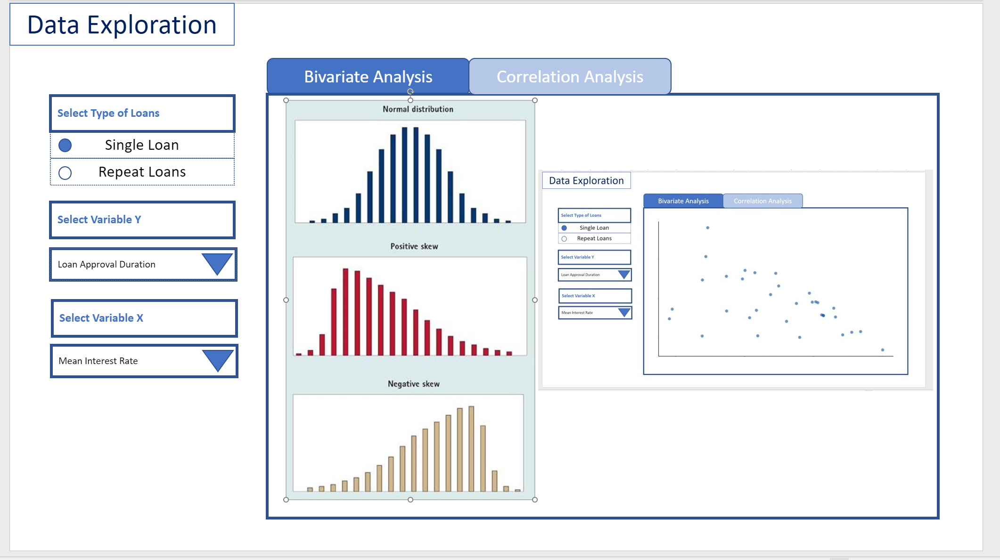
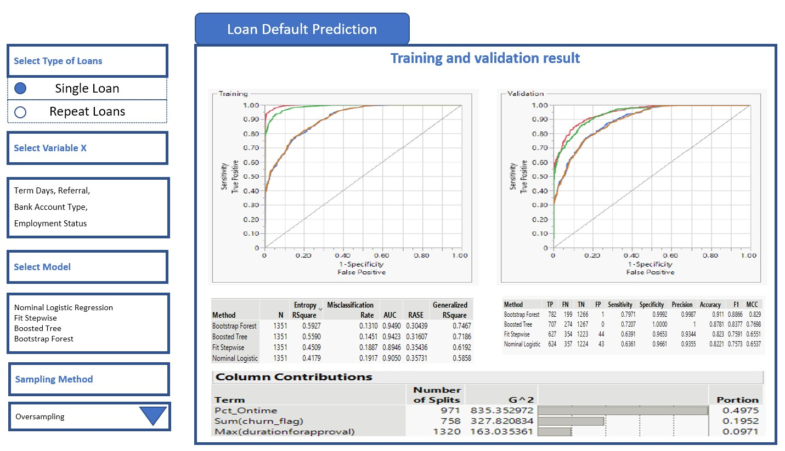

Storyboard - Loan Default Prediction in Nigeria
Background
Loan lending offers substantial profits, but also carries the risk of customers failing to repay loans on time, known as loan default risk, which is a type of credit risk.
To manage uncertainty, lending institutions have established lending standards and created predictive models to better evaluate the likelihood of loan repayment through credit risk assessment of customers.
Over the past thirty years, loan default risk assessment has progressed from traditional credit scoring systems to data modeling utilizing data analytics and machine learning techniques.
Motivation
This project aims to explore R technologies to develop reusable solutions (such as R-shiny application), to support users to perform data exploration, analysis, and prediction from set of customer variables to select the optimal variables to perform the customer loan default prediction.
Data
The data that we are using, is from Data Science Nigeria Challenge #1: Loan Default Prediction.
There are two types of risk models in general:
1st new business risk, which would be used to assess the risk of application(s) associated with the first loan that he/she applies.
2nd repeat or behavior risk model, in which case the customer has been a client and applies for a repeat loan.
Overall, we can split the data into 2 main subsets of data: For Single Loans or Repeat Loans based on number of loans per customer in the data.
Approach
To effectively predict the customer loan default, this study aims to provide following approaches to explore, analysis, mining factors are important to evaluate loan default.
- Loan default factor exploration: it provides visualization on all or selected factors, to allow users to understand the trends of the variables, correlation of variables between each other.
- Loan default factor mining: it provides deep dive analysis for customer further analysis the importance of loan default factors for prediction.
- Loan default prediction: it provides interfaces for users to select variables, sampling methods, and predictive algorithms to model and analyze factors for customer loan default prediction.
R-Shiny App
Exploratory data analysis (EDA)
This is the first part of the R-Shiny application where users can perform Exploratory Data Analysis on this dataset, with the more common tools such as Distribution Analysis , Deviation Analysis and Scatterplot.
Distribution analysis is a statistical technique used to assess the symmetry and shape of a dataset. It involves examining the frequency distribution of a predictor variable to identify whether the data is normally distributed or skewed. If a variable is found to be highly skewed, this can impact the accuracy and reliability of statistical models, and may require data transformation or specialized modeling techniques.
Example:

Another tool can be employed is Deviation Analysis (box plot). Deviation analysis, often performed through box plots, is a graphical technique used to examine the relationship between a categorical predictor variable and a continuous variable. It provides a visual representation of the distribution of the continuous variable within each category of the predictor, and can reveal differences in variability or central tendency between groups. This can aid in identifying potential correlations between the two predictors and inform subsequent statistical analyses.
Example:

Another type of analysis between 2 continuous variables is a scatterplot.
A scatterplot is a graphical tool used to visualize the relationship between two continuous variables. Each point on the plot represents a combination of values for the two variables, and the pattern of points can reveal the direction, strength, and form of the correlation between the variables. Scatterplots can aid in identifying potential associations between variables and provide insights into the nature of the relationship, which can inform subsequent analyses or hypotheses.

PROTOTYPE OF FIRST PAGE

Deeper Dive
The second section of the R-shiny apps would provide users options to experiment with other analysis types such as Multi-collinearity test and Quasi Complete Separation to identify which variables should be include or exclude when building Classification model to predict credit frauds from our data.
Multi- Collinearity Curse
Multicollinearity refers to the situation in which two or more predictor variables in a machine learning model are highly correlated with each other, making it difficult to identify the independent effects of each variable on the dependent variable.
In a classification model, multicollinearity can lead to unstable and unreliable estimates of the coefficients and make it difficult to interpret the model’s results. It can also lead to overfitting and reduce the model’s predictive accuracy. To address multicollinearity, one can exclude the highly correlated variables when building classification model
To determine whether multiple variables are in danger of compromising the model by this issue, we can utilize a correlation matrix.
A correlation matrix is a tool that can be used to identify multicollinearity by showing the pairwise correlations between each pair of predictor variables in the model. The correlation coefficient ranges from -1 to 1, where -1 indicates a perfect negative correlation (when one variable increases, the other decreases) and 1 indicates a perfect positive correlation (when one variable increases, the other increases).
In the context of multicollinearity, a high correlation coefficient (close to 1 or -1) between two predictor variables indicates a strong linear relationship between them. This means that one variable can be predicted well by the other, and it becomes difficult to disentangle the effects of the two variables on the dependent variable. It’s important to note that correlation doesn’t imply causation, and that multicollinearity can also occur between three or more predictor variables, not just pairs.

Quasi Complete Separation
Another issue that our Shiny Apps can allow our users to explore, is the problem with quasi complete separation. Quasi-complete separation is a situation that can occur in classification when a predictor variable perfectly separates the outcome variable into distinct categories.
In other words, when a predictor variable has a perfect linear relationship with the outcome variable, the logistic regression model can perfectly predict which category the outcome variable belongs to based on the value of the predictor variable. This means that the estimated coefficient for the predictor variable becomes infinitely large.
Quasi-complete separation is particularly problematic in small or moderate-sized datasets because it can lead to overfitting and unreliable coefficient estimates. In addition, the model’s performance can be sensitive to small changes in the data, which can make it difficult to interpret the results.
To address quasi-complete separation, there are several approaches that can be taken. One approach is to remove the problematic predictor variable or combine it with other variables to reduce its impact.
In some cases, quasi-complete separation may be a real phenomenon in the data and may require a different approach altogether. For example, if the data has a natural threshold or cutoff point, such as in medical diagnosis or credit scoring, the logistic regression model may need to be modified to account for this threshold. Overall, it’s important to be aware of quasi-complete separation and to use appropriate methods to address it when it occurs.
One method of visual analytics to determine whether a predictor variable has the problem of quasi complete separation is by scatterplot. Quasi-complete separation can be visualized using a scatterplot, which can help to identify the problematic predictor variable and understand its relationship with the outcome variable.
In a scatterplot, the predictor variable is plotted on the x-axis and the outcome variable is plotted on the y-axis. When there is quasi-complete separation, we typically see that the data points fall into two distinct groups or clusters, with no overlap between the two groups.

Loan default prediction using classification algorithms
Upon analyzed variables identified for loan default prediction, next step is prediction. this study make use of Tidymodels library in R for prediction.
Tidymodels
The tidymodels framework is a collection of packages for modeling and machine learning using tidyverse principles.
rsample library
The rsample package provides functions to create different types of resamples and corresponding variables selected for prediction.
parsnip library
The goal of parsnip is to provide a tidy, unified interface to models in loan default prediction.
recipes library
Recipe to preprocessing data for loan default procession.
yardstick library
Yardstick is a package to estimate how well models are working using tidy data principles.

Loan Type
The UI below provides two different loan prediction - New Loan and Repeat Loan. New loan is aim to provide prediction loan default for new customers based on various variables selected, while Repeat Loan is aim to provide prediction for existing customers based on various variables selected.
Variables for New customers:
- bank_name_clients : bank name
- approval_duration_group : approval duration grouping
- age_at_loan_25th_pctile : age at loan approval of 25th percentile
- credit_rating : borrower credict rating
- termdays : duration of loan
- employment_status_risk : employment status of borrower
- level_of_education_risk : education risk of borrower
- referral : referral
- bank_account_type_recode : bank account type
- loanamount_group : loan amount grouping
- approval_duration : approval duration
- loanamount : loan amount
- totaldue : total amount due of the loan
- Interestrate : interest rate of loan (x100)
- age_at_loan : age at the loan borrowed
- longitude_gps : customer loan
- latitude_gps : customer loan
- bank_account_type : bank account type
Variables for Existing customers:
- pct_ontime : loan due one time percentile
- total_ontime : total no. of times loan due on time
- max_active_of_loans : maximum active loan borrowed
- max_approval_duration : maximum loan approval duration
- bank_name_clients : bank name of the loan borrowed
- max_age_at_loan : max age among all loan borrowed
- avg_age_at_loan : age age among all loan borrowed
- employment_status : employment status
- bank_account_type : bank account type
- total_referrals : total referrals of borrowed
- avg_num_of_loans : average number of loan borrowed
- total_num_of_loans : total number of loan borrowed
- total_approval_duration : total approval duration of all loans
- mean_approval_duration : average approval duration of all loans
- max_interest_rate : max interest rate
- mean_interest_rate : averahe interest rate
- mean_referrals : average referrals
- max_churn_flag : maximum loan due on time
- mean_churn_flag : average loan due on time
- loannumber : loan number
- loanamount : loan amount
- totaldue : total amount due of the loan
- termdays : loan duration
- longitude : customer location
- *latitude** : customer location
Algorithms
It also can use different prediction algorithms to achieve better loan default prediction accuracy based on loan type and various variables selected.
Nominal Logistic Regression
Fit Stepwise -Boosted Tree
Bootstrap Forest
Data Sampling
This study also provide sampling method to overcome data inbalance issues. following sampling methods are provided:
- Oversampling
- Tomek Sampling
- SMOTE plus Tomek Sampling
The UI will enable interactive loan default prediction by selecting various variables, algorithms and sampling methods.